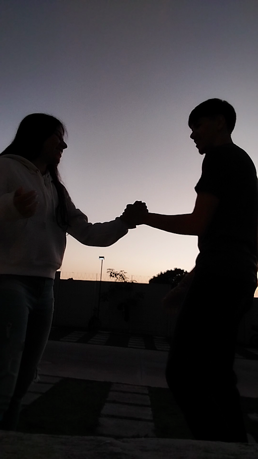
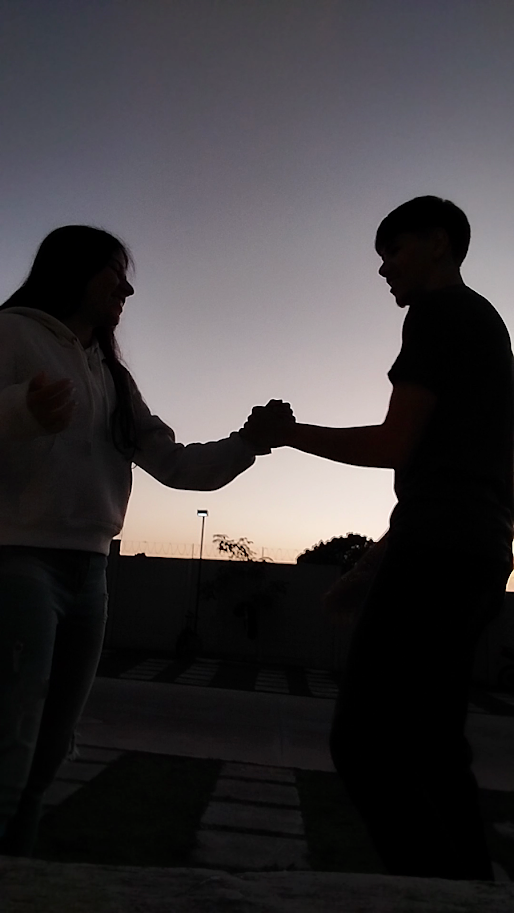

Como nos aproximamos
Éramos jovens, Raquel tinha 17 e eu 16 anos. Estávamos estudando na mesma sala de aula pela terceira vez consecutiva. Então fomos conversando e nos aproximando cada vez mais. Houve uma hora que decidimos fazer dupla no truco e foi aí que começamos a nos aproximar ainda mais.
Certo dia eu envio uma mensagem para ela, o que desencadeou conversas e mais conversas. Quando nós percebemos já estávamos conversando toda hora todo dia.
Como acabamos namorando
Eu sempre quis mais que uma amizade com Raquel, mas não tinha certeza se ela também queria. Eu tinha medo de falar para ela, afinal ela era ex do meu amigo.
Certo dia criei coragem e disse a ela, ela disse-me que também queria mais que uma amizade (09/03/2024). E foi aí que tudo começou.
Não muito tempo depois, em uma quarta-feira, ela teve uma folga no trabalho, então eu que não sou bobo nem nada, perguntei a ela se ela não queria uma companhia (Sim, eu me ofereci para ir à casa dela) e advinha, ELA ACEITOU!
Fui à casa dela e decidimos jogar baralho. Eu estava nervoso mas ela mais ainda.
Mal terminamos uma partida e eu roubei um beijo de Raquel. Ela ficou com muita vergonha.
Voltamos a jogar baralho e um tempo depois saímos para andar. Foi aí que nós nos beijamos de verdade. Foi simplesmente incrível, uma mistura de sentimentos indescritível.
Tempo foi passando e nossos encontros se tornaram mais frequentes. Após um tempo decidimos que ja era hora de se assumir e então eu a pedi em namoro. Tempo depois comprei as alianças e agora estamos vivendo nosso "felizes para sempre".
 
